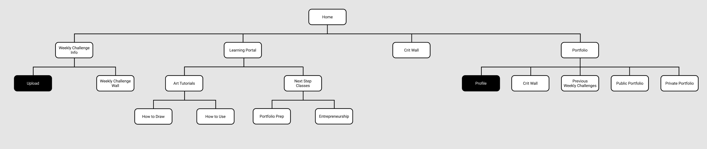
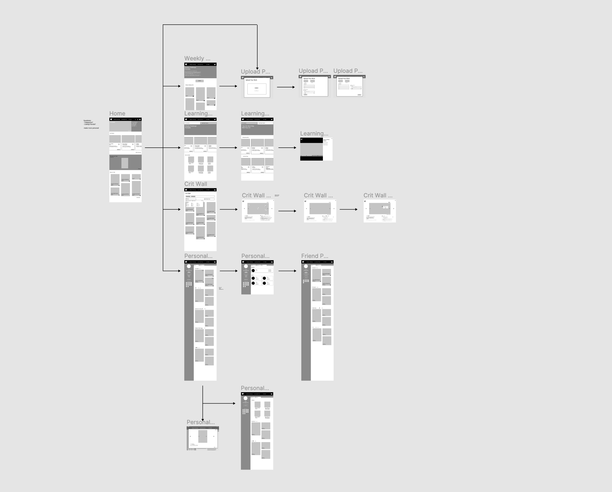
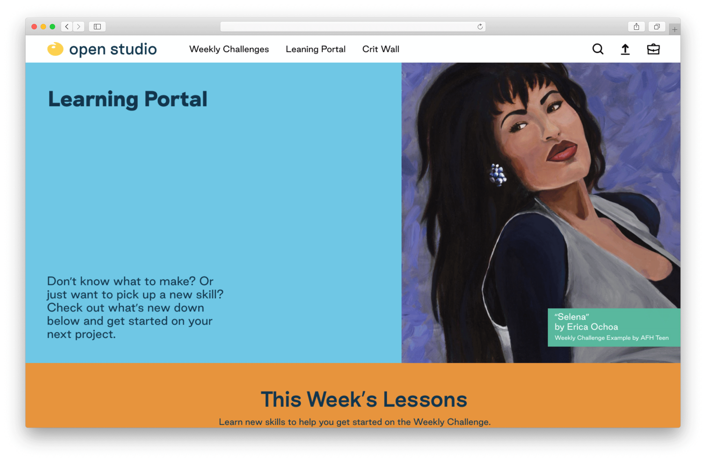
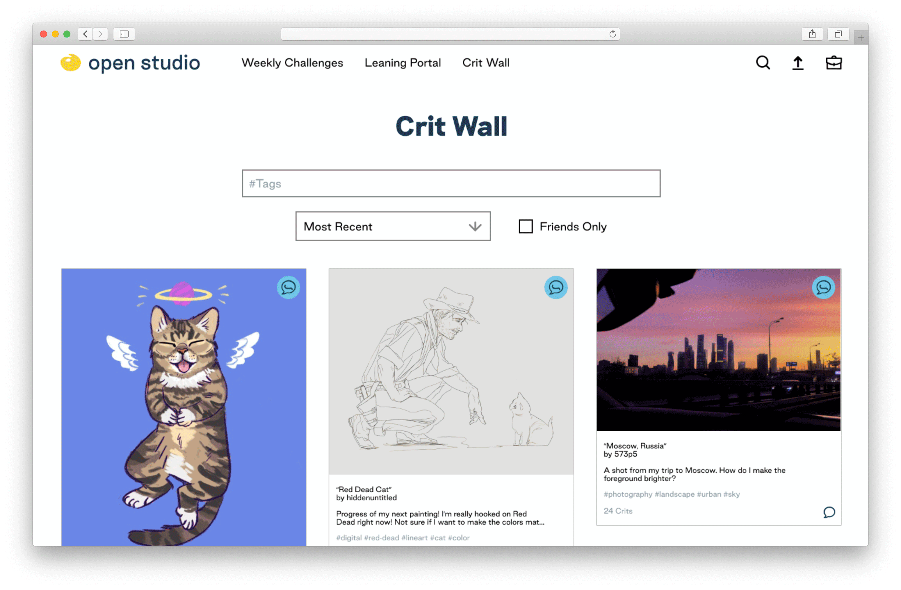
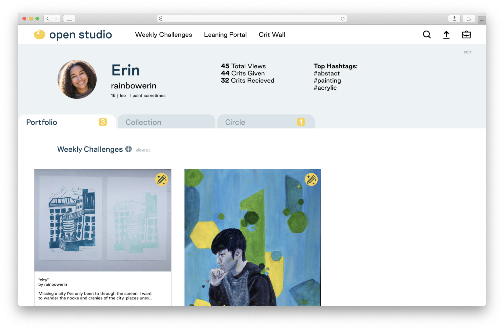

Fall 2019 / 6 weeks
Skills: UX research, UI design
An art learning and sharing web platform for young people
Create a new digital product that has a positive impact for the community it serves.
Artists For Humanity (AFH) provides under-resourced teens the keys to self-sufficiency through paid employment in art and design.AFH is built on the philosophy that engagement in the creative process is a powerful force for social change, and that creative entrepreneurship is a productive and life-changing opportunity for young people.Bridging economic, racial, and social divisions, AFH enriches urban communities by introducing young people's creativity to the business community.
AFH can only serve a limited number of teens. AFH’s program requires teens to commit 3 days a week after school to physically come to their facilities to create.
An online platform will help AFH spread its reach beyond its walls.
I surveyed 14 high schoolers (14-18 year olds) who enjoy making art and are not a part of Artists for Humanity’s program. I found that even though the students enjoyed making art, most of them were not taking art class at school. A majority found the input of their peers valuable, yet many were not sharing their art.I found that most of the teenagers preferred to follow art tutorials on their computers, which redirected me to change my idea of creating a mobile app to creating a website.
I started wireframing and sketching through Figma. I focused on creating different features that would all connect to each other so that there would be a cycle of learning, creating, uploading, and connecting.
 A space dedicated to young people that mimics the experience of an art class, without the grades or commitment.

The Weekly Challenge encourages users to create by giving them a prompt, which changes weekly. Users can vote for their favorite submissions to the weekly challenge and the submission with the most votes has a chance to be featured on the front page of Open Studio.

Learning Portal is where users can pick up new skills from video lessons. The lessons are created and updated weekly by mentors and teens at Artists for Humanity based on the current week's weekly challenge. This gives teens in AFH’s program an opportunity to share tips and tricks they’ve learned at AFH, building their leadership skills in the process.
Crit Wall is where users can ask for input on current projects, give others input, or find inspiration. From the Crit Wall, users can give other users crit through crit boards, which have a selection feature to make critiquing more clear.

The Portfolio is where users can keep a portfolio of their creations, either to share or to archive privately. They can also save their favorite lessons and art from other users in their Collection.
